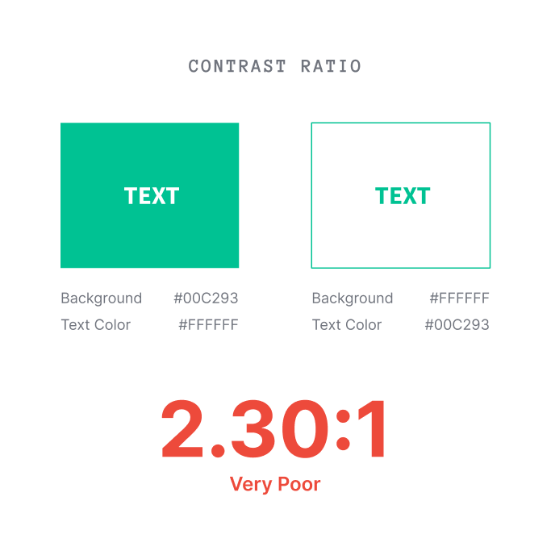

Problem 01
Failing Contrast
The brand green made critical UI elements inaccessible to low-vision users.

WCAG Failure
The brand green (#00C194) with white text failed essential WCAG tests.
Unreadable CTAs
Low-vision users struggled significantly to read text on our primary calls-to-action.